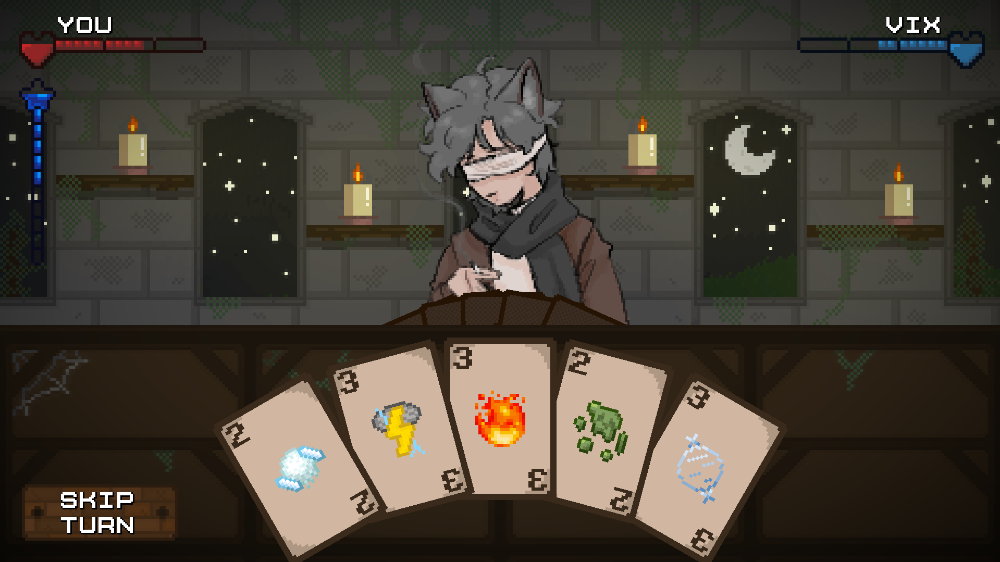
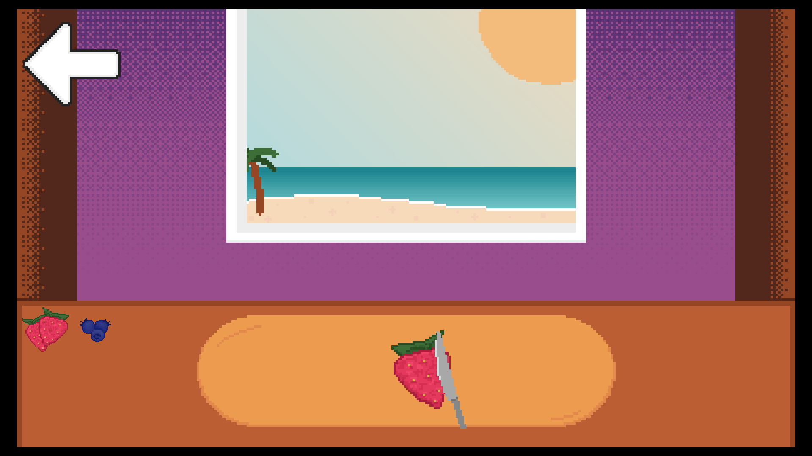

Games I've Made!
All of my published games are over on itch.io, and you can access my profile here.
This was my first game I ever made, created in Construct 3. Broken Tavern is a short Magic Card Playing game similar to Magic the Gathering, where you and the enemy have a healthbar and mana bar. Each card requires a certain amount of mana, and do different things. I made this game by myself within 2 weeks and had struggled with time crunching and removing/changing initial aspects of this game.
I've spent over a year updating Broken Tavern, whether that's bugpatching, hotfixes, adding on to the original content. I had major plans for this game ever since the start, and I eventually want to add this game to Steam.
In my initial prototype, this game was very small. There were many issues, including glitched values or the mana bar not working. At the time, I declared these bugs I couldn't fix as 'intentional', even though it majorly changed the gameplay.


Another game made in Construct 3, this was my first game with a team. Colorful Cooking is a working-simulator game, similar to one of the Papa Louie franchise. I created background and tilemap assets, and programmed the game. Working within a week, this was in a game jam with the theme of Colorful. I also struggled with time crunching in this project, and had to remove many orignal thoughts and aspects.